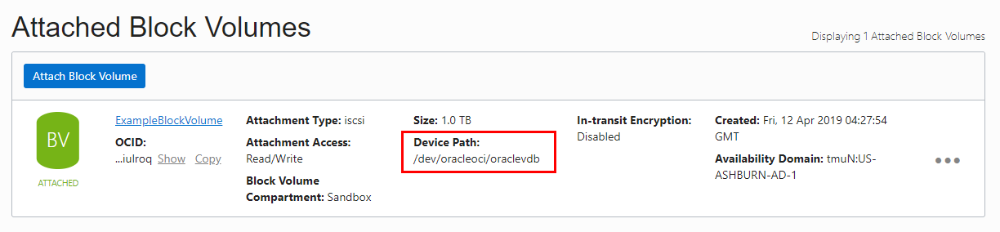

3.6.5 Block Volume 마운트하기
Block Volume 마운트
OCI 문서에 따르면 root volume 이외 volume이 둘 이상일 경우 장치 이름으로 마운트 할 경우 서버 재기동 후 장치 이름과 실제 장치의 대응 되는 순서가 달라 질 수도 있다고 합니다. 2019년 1월 10일 기준 서버 재기동 후 장치 이름과 실제 장치의 대응 되는 순서를 보장하기 위해 Consistent Device Path 기능이 출시 되었습니다. 지원되지 않는 이미지 및 인스턴스에서는 전과 동일하게 Volume의 UUID를 기준으로 마운트 방식을 사용합니다.
- Consistent Device Paths for Block Volumes
- Services: Block Volume
- Release Date: Jan. 10, 2019
- When you attach a block volume to an instance you can now optionally select a device path that will remain consistent between instance reboots. See Connecting to Volumes With Consistent Device Paths for more information.
- 지원 대상
- Oracle-provided 이미지로 만들어진 인스턴스
- Linux 기반 이미지
- 2018년 11월 이후 이미지, 자세한 사항은 Oracle-Provided Image Release Notes 참고
- 2019년 1월 11일 이후 생성된 인스턴스
Device Path로 마운트 하기
OCI 콘솔에서 앞서 생성한 Block Volume의 Device Path(/dev/oracleoci/oraclevdb)를 확인할 수 있습니다.
Compute Instance에 SSH로 접속한 후 Device Path를 확인합니다.
[opc@examplelinuxinstance ~]$ ls -la /dev/oracleoci/ total 0 drwxr-xr-x. 2 root root 140 4월 12 05:48 . drwxr-xr-x. 20 root root 3140 4월 12 05:48 .. lrwxrwxrwx. 1 root root 6 4월 12 05:48 oraclevda -> ../sda lrwxrwxrwx. 1 root root 7 4월 12 05:48 oraclevda1 -> ../sda1 lrwxrwxrwx. 1 root root 7 4월 12 05:48 oraclevda2 -> ../sda2 lrwxrwxrwx. 1 root root 7 4월 12 05:48 oraclevda3 -> ../sda3 lrwxrwxrwx. 1 root root 6 4월 12 05:48 oraclevdb -> ../sdb [opc@examplelinuxinstance ~]$마운트 할 디렉토리 생성
[opc@examplelinuxinstance ~]$ sudo mkdir /mnt/vol1 [opc@examplelinuxinstance ~]$/etc/fstab 업데이트
sudo vi /etc/fstab 명령을 수행하여 확인한 Device Path를 바탕으로 다음 내용을 추가합니다.
OCI 문서의 권고에 따라 인스턴스 재기동시 장착한 Volume의 장애로 인한 영향을 줄이기 위해 _netdev,nofail 옵션을 반드시 추가합니다.$ sudo vi /etc/fstab- 실행예시
/dev/oracleoci/oraclevdb /mnt/vol1 xfs defaults,_netdev,nofail 0 2마운트
$ sudo mount -a인스턴스 재시작
$ sudo reboot재시작후 마운트 확인 /mnt/vol1로 마운트 된 것을 확인 할 수 있습니다.
oracle@ubuntu:~$ ssh -i privateKey opc@129.213.24.XX Last login: Fri Apr 12 06:16:58 2019 from 223.62.163.XX [opc@examplelinuxinstance ~]$ df -h Filesystem Size Used Avail Use% Mounted on devtmpfs 7.2G 0 7.2G 0% /dev tmpfs 7.3G 0 7.3G 0% /dev/shm tmpfs 7.3G 8.6M 7.3G 1% /run tmpfs 7.3G 0 7.3G 0% /sys/fs/cgroup /dev/sda3 39G 1.9G 37G 5% / /dev/sda1 200M 9.7M 191M 5% /boot/efi /dev/sdb 1.0T 33M 1.0T 1% /mnt/vol1 tmpfs 1.5G 0 1.5G 0% /run/user/1000 [opc@examplelinuxinstance ~]$ cd /mnt/vol1/ [opc@examplelinuxinstance vol1]$ ls -la total 0 drwxr-xr-x. 2 root root 6 4월 12 06:00 . drwxr-xr-x. 3 root root 18 4월 12 05:34 .. [opc@examplelinuxinstance vol1]$
UUID로 마운트 하기
OCI 문서에 따르면 root volume 이외 volume이 둘 이상일 경우 장치 이름으로 마운트 할 경우 서버 재기동 후 장치 이름과 실제 장치의 대응 되는 순서가 달라 질 수도 있다고 합니다. 그래서 정확하게 하기 위해 Volume의 UUID를 기준으로 마운트합니다.
Compute Instance에 SSH로 접속한 후 lsblk 명령어를 통해 UUID 확인합니다.
[opc@examplelinuxinstance ~]$ lsblk -f NAME FSTYPE LABEL UUID MOUNTPOINT sdb xfs 7e4634bd-8514-4c1d-9c02-0f641bbfa1e2 sda ├─sda2 swap c0546259-1549-46e5-b58a-d64860fc1d93 [SWAP] ├─sda3 xfs 33768916-dab1-4895-a973-8d37fc241c31 / └─sda1 vfat B5D1-AB1B /boot/efi [opc@examplelinuxinstance ~]$마운트 할 디렉토리 생성
[opc@examplelinuxinstance ~]$ sudo mkdir /mnt/vol1 [opc@examplelinuxinstance ~]$/etc/fstab 업데이트
sudo vi /etc/fstab 명령을 수행하여 확인한 UUID를 바탕으로 다음 내용을 추가합니다.
OCI 문서의 권고에 따라 인스턴스 재기동시 장착한 Volume의 장애로 인한 영향을 줄이기 위해 _netdev,nofail 옵션을 반드시 추가합니다.$ sudo vi /etc/fstab- 실행예시
UUID=7e4634bd-8514-4c1d-9c02-0f641bbfa1e2 /mnt/vol1 xfs defaults,_netdev,nofail 0 2마운트
$ sudo mount -a인스턴스 재시작
$ sudo reboot재시작후 마운트 확인 /mnt/vol1로 마운트 된 것을 확인 할 수 있습니다.
oracle@ubuntu:~$ ssh -i privateKey opc@129.213.24.XX Last login: Fri Apr 12 05:18:18 2019 from 223.62.163.XX [opc@examplelinuxinstance ~]$ df -h Filesystem Size Used Avail Use% Mounted on devtmpfs 7.2G 0 7.2G 0% /dev tmpfs 7.3G 0 7.3G 0% /dev/shm tmpfs 7.3G 8.6M 7.3G 1% /run tmpfs 7.3G 0 7.3G 0% /sys/fs/cgroup /dev/sda3 39G 1.9G 37G 5% / /dev/sda1 200M 9.7M 191M 5% /boot/efi /dev/sdb 1.0T 33M 1.0T 1% /mnt/vol1 tmpfs 1.5G 0 1.5G 0% /run/user/1000 [opc@examplelinuxinstance ~]$ cd /mnt/vol1/ [opc@examplelinuxinstance vol1]$ ls -la total 0 drwxr-xr-x. 2 root root 6 4월 12 06:00 . drwxr-xr-x. 3 root root 18 4월 12 05:34 .. [opc@examplelinuxinstance vol1]$
** 이 글은 개인으로서, 개인의 시간을 할애하여 작성된 글입니다. 글의 내용에 오류가 있을 수 있으며, 글 속의 의견은 개인적인 의견입니다. **